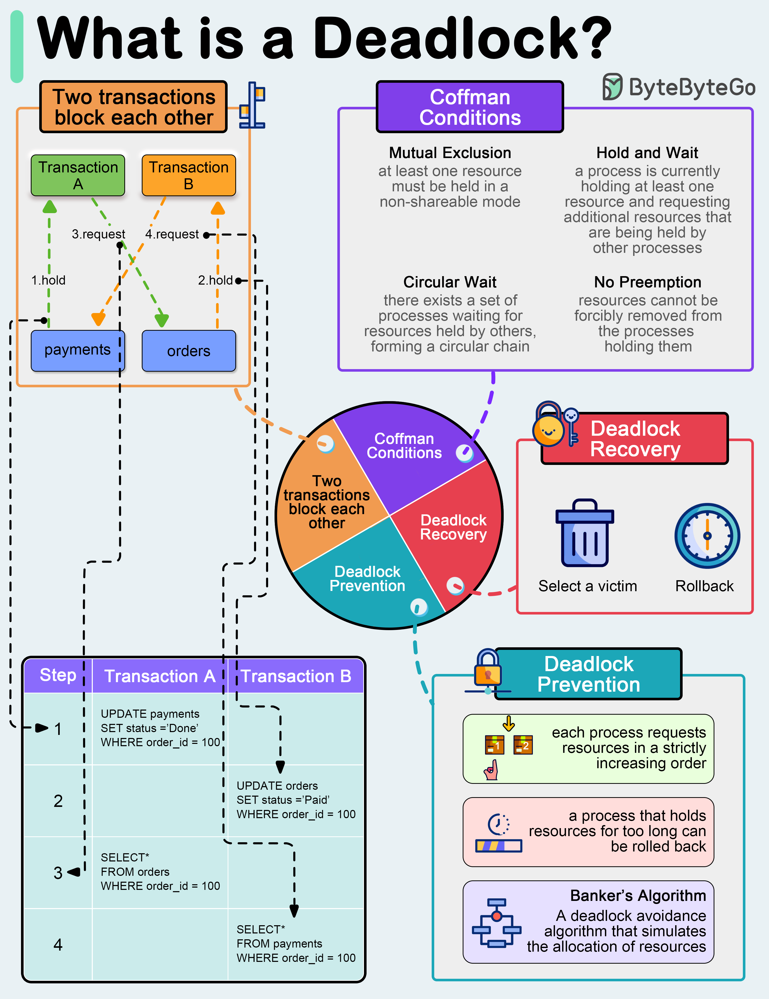
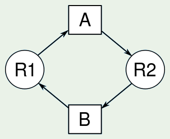
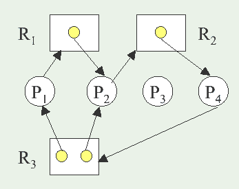
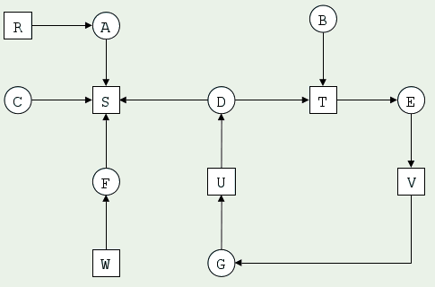

Universidad Nacional Experimental Del Táchira
Decanato De Docencia
Dpto. Ingeniería en Informática
Interbloqueo
Código 0435607T
Contenido
- Recursos y bloqueos
- Modelación de bloqueos.
- Bloqueos y condiciones de competencia.
- Métodos para tratar bloqueos.
- Detección y recuperación de bloqueos.
Introducción
- Los sistemas computacionales están llenos de recursos que pueden ser utilizados por un solo proceso a la vez.
- Una ley aprobada en Kansas en el siglo XX: Cuando dos trenes se aproximen a la vez a un cruce, ambos deben detenerse por completo y ninguno arrancará hasta que el otro haya salido. ¿Cómo funciona esto?
Recursos e interbloqueos
- Interbloqueo: ocurre cuando dos o más procesos permanentemente se bloquean mutuamente (no pueden cambiar de estado), donde cada proceso tiene bloqueado un recurso que otros procesos intentan bloquear. No existe una solución general para esta situación.
- Recurso: Cualquier dispositivo de hardware o pieza de información de un sistema computacional.
Ejemplo de interbloqueo

Diagrama de interbloqueo


Fuente Alex Xu
Tipos de recursos
- Recursos apropiativos: Le pueden ser quitados a un proceso sin efectos dañinos. Ej: Memoria RAM. Caso impresora.
- Recursos no apropiativos: no se le pueden quitar a un proceso sin consecuencias no deseadas. Ej: Grabador de CD.
Interacción de
procesos y recursos
En modo de operación normal, un proceso puede obtener un recurso solo a través de la siguiente secuencia:
- Solicitud: mediante una llamada al sistema, el proceso pide acceder a un recurso, si esta libre se le concede inmediamente, de lo contrario, espera hasta poder adquirirlo.
- Uso: el proceso opera sobre el recurso, por ejemplo, si solicitó acceder a un pendrive escribe o lee archivos en él.
- Liberación: mediante una llamada al sistema, el proceso pide libera el recurso cuando ya no lo necesita usar.
Recursos e interbloqueos
Modelado a través de grafos
- Se pueden representar a través de grafos dirigidos.
- El proceso es representado por un círculo.
- El recurso se representa con un cuadrado.
- En caso de existir más de una instancia de un recurso, dentro del cuadrado se observarán cada una de ellas.
-
Flechas:
- De asignación (Rj→Pi), indican que el recurso j se asignó al proceso i.
- De solicitud (Pi→Rj), indican que el proceso i solicita el recurso j.
Recursos e interbloqueos
Modelado a través de grafos
- El proceso R1 solicita el recurso A.
- El recurso A está asignado al proceso R2.
- El proceso R2 solicita el recurso B.
- El recurso B está asignado al proceso R1.

Ejemplo de interbloqueo en grafos de alocación de recursos. - Fuente: Wikipedia
Recursos e interbloqueos
Ejemplo de un grafo
- P = { P1, P2, P3, P4 }
- R = { R1, R2, R3 }
-
F = {
P1R1, P2R2, P4R3,
R1P2, R2P4, R3P1, R3P2
}
Instancias: 1 de R1 y R2, 2 de R3.

Ejemplo de un interbloqueo
Condiciones de competencias
- Exclusión mutua: solo un proceso puede usar un recurso cada vez, si otro proceso lo solicita, debe esperar a que sea liberado.
- Retención y espera: un proceso está reteniendo un recurso y espera por otro recurso adicional pero está retenido por otro proceso.
Condiciones de competencias
- Sin desalojo: los recursos no pueden ser desalojados, pues solo el proceso es capaz de liberar dicho recurso.
- Espera circular: Existe una cadena cerrada de procesos {P0, P1, ..., Pn}, cada uno de los cuales retiene, al menos, un recurso necesitado por el siguiente proceso de la cadena (P0 espera por P1, P1 por P2, P2 por P3, ..., Pn por P0).
Estrategias para evitar
el interbloqueo
Existe maneras de evitar el interbloqueo si se conoce cierta información de los procesos antes de asignarle recursos.
Si se comprueba que no se producirá un interbloqueo (estado inseguro) se le asigna el recurso, de lo contrario lo hace esperar.
Estrategias para evitar
el interbloqueo
Estos métodos son de dos tipos:
-
Métodos indirectos
consisten en impedir la aparición de alguna de las condiciones necesarias para que se dé el interbloqueo. -
Métodos directos
consisten en evitar la aparición del circulo vicioso de espera.
Estrategias para evitar
el interbloqueo
Exclusión mutua
Se aplica a los recursos que no pueden ser compartidos como la impresora. Pues varios procesos no pueden acceder a ella para imprimir simultáneamente. A diferencia de un archivo de solo lectura, donde varias tareas pueden leer el archivo al mismo tiempo.
Estrategias para evitar
el interbloqueo
Prevención del Interbloqueo - Retención y espera
- Consiste en evitar la retención de recursos mientras espera que se le asignen otros. Esto se puede lograr:
- Exigir al proceso que pida todos los recursos de una vez antes de ejecutarse. Pero se retendrían muchos recursos no utilizados retrasando la ejecución de otros procesos.
- Los procesos no saben cuantos recursos necesitará sino hasta cuando comience a ejecutarse, por eso no es óptimo.
Estrategias para evitar
el interbloqueo
Prevención del Interbloqueo - Retención y espera
- Un proceso sólo puede solicitar recursos cuando no tiene ninguno asignado. Pero puede ocurrir que se libera un recurso y más tarde se debe volver a pedirlo para solicitar otros recursos.
Nota: En ambos casos se puede dar una inanición (un proceso nunca se termina de ejecutar).
Estrategias para enfrentar los bloqueos
Prevención del Interbloqueo No expropiación
- Utilizado en recursos cuyo estado se puede almacenar y restaurarse posteriormente. En esta estrategia se permite al S.O. la expropiación de recursos a un proceso bloqueado.
- Si un proceso solicita un recurso que no se le pueden asignar por los momentos, se liberan todos los recursos retenidos por él y quedan a disposición de los procesos activos.
Estrategias para enfrentar los bloqueos
Prevención del Interbloqueo - No expropiación
- Un proceso bloqueado debe esperar por todos los recursos.
- Penaliza a procesos con muchas solicitudes de recursos.
Estrategias para enfrentar los bloqueos
Prevención del Interbloqueo - Espera circular
A cada recurso se le asigna un orden, y el proceso solo puede solicitar recursos con un orden superior al recurso actual. Además debe liberar el recurso retenido para obtener el solicitado.
Sin embargo, no es recomendable porque limita al desarrollador en la forma en que puede escribir sus aplicaciones y se induce a la mala utilización de recursos.
Estrategias para enfrentar los bloqueos
Predicción del Interbloqueo
Consiste en asignar los recursos solamente cuando no presentan un posible riesgo de interbloqueo. Para ello, es necesario conocer las futuras peticiones de los recursos: cada proceso ha de declarar por anticipado la cantidad máxima de recursos a utilizar a lo largo de su ejecución.
Estrategias para enfrentar los bloqueos
Predicción del Interbloqueo
Existen dos enfoques para la predicción de interbloqueo:
- No iniciar un proceso si sus demandas presentan condiciones que pueden llevar al interbloqueo.
- No conceder solicitudes de incremento de recursos a un proceso si la asignación puede llevar a un interbloqueo.
Estrategias para enfrentar los bloqueos
Concepto de estado seguro
El estado del sistema viene dado por la asignación actual de los recursos a los procesos. Existen 2 tipos de estados:
- Estado seguro: es cuando existe una secuencia de asignación de recursos donde no se va a producir un interbloqueo.
- Estado inseguro: cuando en la una secuencia de asignación se va a producir un interbloqueo.
Estrategias para enfrentar los bloqueos
Algoritmo del banquero
Estrategias para enfrentar los bloqueos
Funcionamiento del algoritmo del banquero
- Dada una secuencia de procesos P = {P1, P2, ..., Pn}, se considera como estado seguro, si los recursos que pide Pi, en el peor de los casos se pueden atender con los recursos disponibles más los recursos poseídos por todos los procesos Pj, j %lt; i (procesos anteriores).
- El peor caso: que todos los procesos soliciten a la vez el máximo de recursos necesarios.
Estrategias para enfrentar los bloqueos
Algoritmo del banquero
- El primer proceso de la secuencia podría finalizar con los recursos disponibles en el sistema.
- El segundo finalizaría con los disponibles más los liberados en el proceso 1 y así sucesivamente.
- Si se pueden atender todas las peticiones de los procesos no existirá interbloqueo.
Estrategias para enfrentar los bloqueos
Algoritmo del banquero
E = { 6 , 3 , 4 , 2 }
| A | 3 | 0 | 1 | 1 |
|---|---|---|---|---|
| B | 0 | 1 | 0 | 0 |
| C | 1 | 1 | 1 | 0 |
| D | 1 | 1 | 0 | 1 |
| E | 0 | 0 | 0 | 0 |
Recursos asignados
A = { 1 , 0 , 2 , 0 }
| A | 1 | 1 | 0 | 0 |
|---|---|---|---|---|
| B | 0 | 1 | 1 | 2 |
| C | 3 | 1 | 0 | 0 |
| D | 0 | 0 | 1 | 0 |
| E | 2 | 1 | 1 | 0 |
Recursos necesarios
Algoritmo del banquero: caso de cuatro recursos
El vector disponible es el total existente menos lo asignado. La tabla «Recursos necesarios» ya muestra la necesidad.
Paso 1 de 5: termina D
La necesidad de D {0, 0, 1, 0} puede cubrirse. D termina y libera su asignación.
Paso 2 de 5: termina A
La necesidad de A {1, 1, 0, 0} puede cubrirse con los recursos disponibles.
Paso 3 de 5: termina B
La necesidad de B {0, 1, 1, 2} puede cubrirse con los recursos disponibles.
Paso 4 de 5: termina C
La necesidad de C {3, 1, 0, 0} puede cubrirse con los recursos disponibles.
Paso 5 de 5: termina E
La necesidad de E {2, 1, 1, 0} puede cubrirse. E termina sin devolver recursos porque no tenía ninguno asignado.
Secuencia segura: D → A → B → C → E. No hay interbloqueo.
Estrategias para enfrentar los bloqueos
Algoritmo del banquero
Existencia = { 10 , 5 , 7 }
| A | B | C | |
|---|---|---|---|
| P1 | 0 | 1 | 0 |
| P2 | 2 | 0 | 0 |
| P3 | 3 | 0 | 2 |
| P4 | 2 | 1 | 1 |
| P5 | 0 | 0 | 2 |
Recursos asignados
Disponibles = { 3, 3, 2 }
| A | B | C | |
|---|---|---|---|
| P1 | 7 | 5 | 3 |
| P2 | 3 | 2 | 2 |
| P3 | 9 | 0 | 2 |
| P4 | 2 | 2 | 2 |
| P5 | 4 | 3 | 3 |
Necesidades máximas
La necesidad de P2 es {1, 2, 2}: 1 instancia de A, 2 de B y 2 de C.
Calculamos la matriz de necesidad
Para cada proceso: Necesidad = Máximo − Asignado. Iniciamos con Work = Disponibles.
Paso 1 de 5: termina P2
Necesidad de P2 {1, 2, 2} ≤ Work. P2 termina y devuelve su asignación.
Paso 2 de 5: termina P4
Necesidad de P4 {0, 1, 1} ≤ Work. P4 termina y devuelve su asignación.
Paso 3 de 5: termina P5
Necesidad de P5 {4, 3, 1} ≤ Work. P5 termina y devuelve su asignación.
Paso 4 de 5: termina P1
Necesidad de P1 {7, 4, 3} ≤ Work. P1 termina y devuelve su asignación.
Paso 5 de 5: termina P3
Necesidad de P3 {6, 0, 0} ≤ Work. P3 termina y devuelve su asignación.
Secuencia segura: P2 → P4 → P5 → P1 → P3. No hay interbloqueo.
Estrategias para enfrentar los bloqueos
Ignorar todo el problema
(Algoritmo del Avestruz)
- Es el algoritmo más simple: Meta su cabeza en la arena y pretenda que no hay ningún problema.
- Tal vez si usted lo ignora, él lo ignorará a usted.
Estrategias para enfrentar los bloqueos
Detección y recuperación
- Con este enfoque el sistema no trata de evitar los bloqueos.
- Detecta cuando ocurre un interbloqueo y se toman ciertas acciones para resolverlo.
- Existen distintos métodos para detectar y recuperar los bloqueos.
Estrategias para enfrentar los bloqueos
Detección y recuperación de Interbloqueo
Detección
- Una sola instancia de recurso para cada tipo.
- Varias instancias de cada tipo de recursos.
Recuperación
- Mediante apropiación.
- Mediante Rollback.
- Mediante eliminación de procesos.
Estrategias para enfrentar los bloqueos
Detección: Una sola instancia de recurso para cada tipo
Consiste en usar una variante del grafo de asignación de recursos denominada grafo de espera.
Para obtener ese grafo, se deben eliminar los nodos de recursos y redirigiendo las correspondientes aristas.

Estrategias para enfrentar los bloqueos
Varias instancias de cada tipo de recursos
Se aplica el algoritmo del banquero, pero se utilizan los términos similares como:
- Available: un vector de longitud m que indica el número de recursos disponibles de cada tipo.
- Allocation: una matriz de m x n que define el número de recursos de cada tipo que están asignados actualmente a cada proceso.
- Request: una matriz n x m que especifica la solicitud actual efectuada por cada proceso.
Detección y recuperación de los interbloqueos
Recuperación de los interbloqueo
Para recuperarse, el sistema debe llamar a un algoritmo de detección y realizar una de las siguientes opciones para romper un interbloqueo.
- Apropiación: quitar temporalmente el recurso a su propietario actual. Depende de la naturaleza del proceso y del recurso. No todos los recursos permiten esto sin consecuencias y sin que el proceso actual lo note.
Detección y recuperación de los interbloqueos
Recuperación de los interbloqueo
- Rollback: se crean puntos de comprobación de los procesos durante su ejecución. Se guarda el estado completo del proceso. Cuando se detecta el bloqueo, se devuelve a su último punto de comprobación antes de adquirir el recurso que lo bloqueó (pierde el avance hasta este punto), y se asigna el recurso a otro proceso del interbloqueo. Si el proceso trata de adquirir nuevamente el recurso origen del bloqueo, tendrá que esperar.
Detección y recuperación de los interbloqueos
Recuperación de los interbloqueo
Terminación de procesos
- Un proceso muy drástico consiste en interrumpir todos los procesos implicados en el interbloqueo, pero se pierde todo el tiempo de cpu invertido hasta el momento.
- Otro es abortar a uno de los procesos, la elección se puede basar en algunos aspectos como aquel que lleve menos tiempo de CPU o el que libere más recursos.
Detección y recuperación de los interbloqueos
Recuperación de los interbloqueo: Expropiación de recursos
- Selección de una víctima: se escoge un proceso para expropiar un recurso basándose en decisiones que garanticen que se evita el interbloqueo.
- Anulación: debido a que no se puede reanudar la ejecución de un proceso si se le quita un recurso. Lo que se hace es anular proceso y reiniciarlo.
- Inanición: consiste en tomar recursos evitando con sumo cuidado que un proceso nunca se llegue a ejecutar.